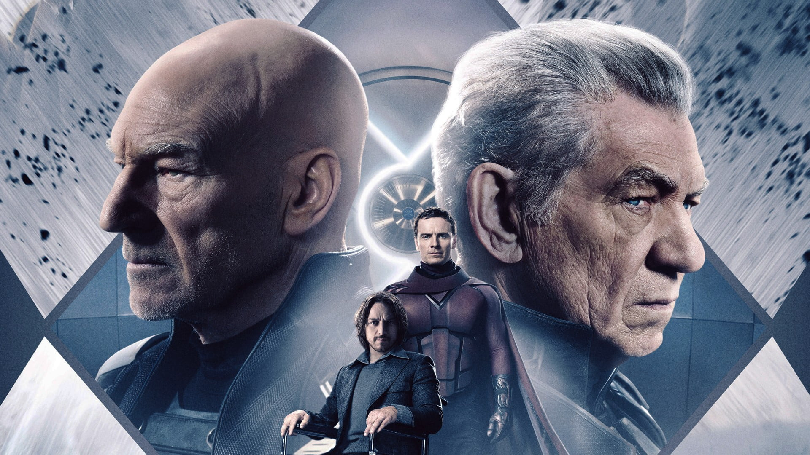

Le 26 mars 2025, Marvel Studios a frappé un grand coup en annonçant officiellement le début de la production de Avengers : Doomsday. Après plusieurs mois de spéculations, le studio a levé le voile sur un casting aussi impressionnant qu’ambitieux, confirmant le retour de figures emblématiques du MCU tout en introduisant de nouveaux personnages majeurs.
Une annonce originale : 5 heures de live sur X
Marvel n’a pas fait les choses à moitié pour révéler son casting. L’annonce s’est déroulée lors d’un livestream de cinq heures sur X (anciennement Twitter), où le suspense était à son comble. Pendant cet événement inédit, une chaise marquée d’un nom d’acteur apparaissait toutes les 12 minutes, laissant les fans découvrir progressivement les stars qui allaient composer cette nouvelle ère du MCU.

Un casting cinq étoiles
L’annonce a révélé un mélange d’anciens et de nouveaux visages, consolidant l’avenir du Marvel Cinematic Universe (MCU). Parmi les acteurs confirmés, on retrouve :
- Robert Downey Jr. : Docteur Fatalis
- Chris Hemsworth : Thor
- Tom Hiddleston : Loki
- Patrick Stewart : Professeur X
- Ian McKellen : Magneto
- Anthony Mackie : Sam Wilson / Captain America
- Pedro Pascal : Reed Richards
- Sebastian Stan : le Soldat de l’Hiver
- Letitia Wright : Shuri / Black Panther
- Paul Rudd : Ant-Man
- Wyatt Russell : U.S. Agent
- Tenoch Huerta : Namor
- Ebon Moss-Bachrach : la Chose
- Simu Liu : Shang-Chi
- Florence Pugh : Yelena Belova
- Kelsey Grammer : le Fauve
- Lewis Pullman : Sentry
- Danny Ramirez : Falcon
- Joseph Quinn : la Torche Humaine
- David Harbour : Red Guardian
- Winston Duke : M’Baku
- Hannah John-Kamen : le Fantôme
- Alan Cumming : Diablo
- Rebecca Romijn : Mystique
- James Marsden : Cyclope
- Channing Tatum : Gambit
- Vanessa Kirby : Sue Storm
Un antagoniste d’envergure : Docteur Fatalis
L’annonce la plus marquante reste le retour de Robert Downey Jr., mais pas dans le rôle de Tony Stark. Cette fois-ci, l’acteur prêtera ses traits à Victor Von Fatalis, alias Docteur Fatalis. Ce choix surprenant pourrait bien marquer une nouvelle ère pour le MCU, en établissant Fatalis comme la prochaine menace majeure.
Le retour des figures emblématiques des X-Men : Magneto et Professeur X
Le casting d'Avengers : Doomsday n’a pas seulement mis en avant les super-héros traditionnels de l’univers Marvel, mais aussi des personnages clés des X-Men qui refont surface après des années d'absence. En effet, deux géants du genre font leur grand retour : Patrick Stewart reprend son rôle de Professeur X, tandis que Ian McKellen endosse à nouveau le costume de Magneto.
Ce retour marque un tournant pour le MCU, qui accueille à bras ouverts des personnages légendaires, longtemps considérés comme les piliers de l'univers mutant. La dynamique entre Magneto et Charles Xavier, symbolisant la lutte entre la réconciliation et la domination, promet d’ajouter de la profondeur à l’intrigue de Doomsday. Les fans des X-Men n’ont plus qu’à espérer que leurs retrouvailles seront à la hauteur des attentes, et qu’elles influenceront l’avenir du MCU de manière déterminante.
Des absences remarquées et un spoil sur *Thunderbolt* ?
Si le casting d'Avengers : Doomsday est époustouflant, certaines absences dans ce film alimentent déjà des rumeurs et des théories sur l’avenir du MCU. Des acteurs emblématiques comme Tom Holland (Spider-Man), Benedict Cumberbatch (Doctor Strange), Mark Ruffalo (Hulk) et Jeremy Renner (Hawkeye) sont absents du casting de *Doomsday*. Cela pourrait annoncer des changements de direction, mais surtout, cela semble dévoiler des éléments du prochain film *Thunderbolt*. En effet, l'absence de ces personnages pourrait signifier qu'ils seront présents dans ce film, bien que cela reste à confirmer. Cette absence et ces révélations sur *Thunderbolt* laissent présager des rebondissements inattendus, mais il est bien dommage que certains spoilers majeurs aient déjà filtré.
Encore plus d’annonces à venir ?
Si cette première vague de révélations a déjà marqué les esprits, Marvel pourrait ne pas en rester là. Il faudra s’attendre à d’autres annonces de casting, notamment lors de la CinemaCon – pour laquelle nous avons déjà rédigé un article détaillé à consulter ici – et lors de la Comic-Con de San Diego en juillet. Ces événements pourraient dévoiler encore plus de surprises et compléter le puzzle de Avengers : Doomsday.
Une sortie attendue en 2026
Réalisé par Anthony et Joe Russo, Avengers : Doomsday a pour objectif de redonner un second souffle au MCU après une phase 4 et 5 en demi-teinte. Prévu pour mai 2026, ce film pourrait être l’un des plus ambitieux de la franchise, avec un casting impressionnant et des enjeux colossaux.
Les attentes sont désormais immenses. Marvel parviendra-t-il à recréer la magie d’Infinity War et Endgame ? Réponse dans un peu plus d’un an.
➡️ À lire aussi : Une actrice de Stranger Things rejoint le casting du prochain film Spider-Man en 2027 !